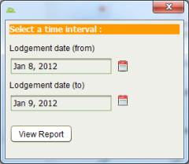

The Lodgement Report lists information on the number of applications and services processed during a given time period. It can be accessed using the Reports > Lodgement Report menu option in the Registry Desktop main menu. Enter the appropriate time interval in the dialog displayed and click View Report to generate the Lodgement Report.

Lodgements Report Interval